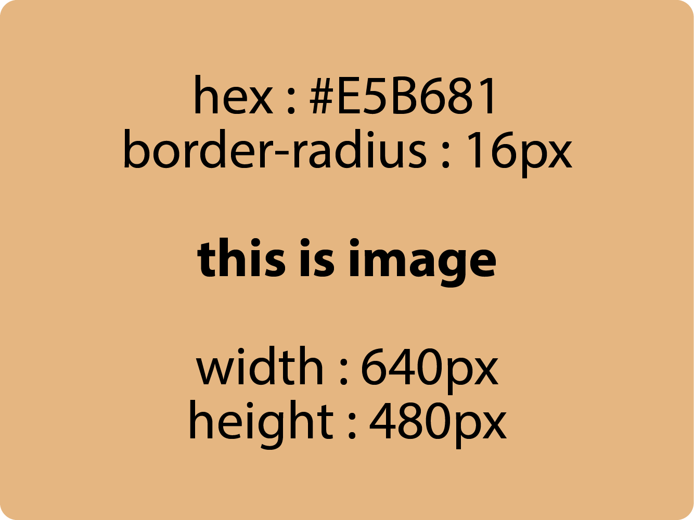

DKV
Desain Komunikasi Visual
Jurusan yang mempelajari cara menyampaikan pesan visual secara kreatif menggunakan elemen grafis, warna, fotografi, dan media digital
Fokus Pembelajaran : Desain grafis, ilustrasi, videografi, fotografi, seni digital, dan branding.
Kompetensi Yang Dipelajari
- Mengoperasikan software desain (Adobe Photoshop, Illustrator, Premiere Pro, dll).
- Membuat logo, poster, dan identitas visual sebuah brand.
- Teknik pengambilan gambar (foto dan video) serta proses editing-nya.
Prospek : Graphic Designer, UI/UX Designer junior, Videographer/Photographer, Content Creator, atau bekerja di agensi periklanan (Creative Agency).